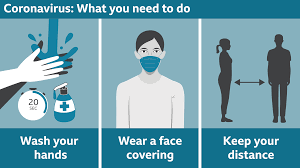
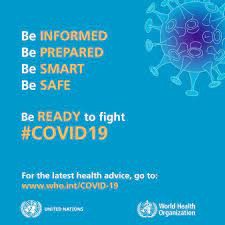

Safety from Corona
Links:
Protect yourself and others from COVID-19
f COVID-19 is spreading in your community, stay safe by taking some simple precautions, such as physical distancing, wearing a mask, keeping rooms well ventilated, avoiding crowds, cleaning your hands, and coughing into a bent elbow or tissue. Check local advice where you live and work. Do it all!
You also find out more about WHO's recommendations for getting vaccinated on our public advice page on COVID-19 vaccines.

What to do to keep yourself and others safe from COVID-19
Maintain at least a 1-metre distance between yourself and others to reduce your risk of infection when they cough, sneeze or speak. Maintain an even greater distance between yourself and others when indoors. The further away, the better.
Make wearing a mask a normal part of being around other people. The appropriate use, storage and cleaning or disposal are essential to make masks as effective as possible.
Here are the basics of how to wear a mask:
Clean your hands before you put your mask on, as well as before and after you take it off, and after you touch it at any time.
Make sure it covers both your nose, mouth and chin.
When you take off a mask, store it in a clean plastic bag, and every day either wash it if it’s a fabric mask, or dispose of a medical mask in a trash bin.
Don’t use masks with valves.
For specifics on what type of mask to wear and when, read our Q&A and watch our videos. There is also a Q&A focused on masks and children.
Find out more about the science of how COVID-19 infects people and our bodies react by watching or reading this interview.
For specific advice for decision makers, see WHO’s technical guidance.
How to make your environment safer
Avoid the 3Cs: spaces that are closed, crowded or involve close contact.
Outbreaks have been reported in restaurants, choir practices, fitness classes, nightclubs, offices and places of worship where people have gathered, often in crowded indoor settings where they talk loudly, shout, breathe heavily or sing.
The risks of getting COVID-19 are higher in crowded and inadequately ventilated spaces where infected people spend long periods of time together in close proximity. These environments are where the virus appears to spread by respiratory droplets or aerosols more efficiently, so taking precautions is even more important.
Meet people outside. Outdoor gatherings are safer than indoor ones, particularly if indoor spaces are small and without outdoor air coming in.
For more information on how to hold events like family gatherings, children’s football games and family occasions, read our Q&A on small public gatherings.
Avoid crowded or indoor settings but if you can’t, then take precautions:
Open a window. Increase the amount of ‘natural ventilation’ when indoors.
WHO has published Q&As on ventilation and air conditioning for both the general public and people who manage public spaces and buildings.
Wear a mask (see above for more details).
